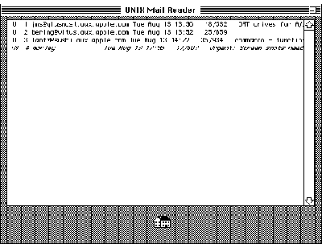

Apple's A/UX operating system is unique among UNIX systems in that it merges the
Macintosh user interface and application environment with the multitasking UNIX
operating system. Developers can take advantage of this combination by creating a
class of applications called hybrids. This article describes the techniques necessary to
create Macintosh hybrid applications and demonstrates some of the benefits of these
applications.
The UNIX® operating system began some 20 years ago as a personal project
undertaken by a couple of engineers at AT&T Bell Laboratories. For a number of
technical and business reasons, UNIX emerged as the leading software platform for a
phenomenon called Open Systems. Although this buzzword is batted around in many
different and confusing contexts, it basically refers to systems that adhere to
multivendor industry standards, thus protecting their owner's investment in
software, training, and so on.
At Apple we recognized the growing importance of the UNIX system in many segments
of the marketplace, particularly for government, higher education, and large
corporate customers. We also understood that the UNIX system's principal weakness
was its lack of ease of use at both the system and application level. By grafting the
Macintosh user interface onto a full-featured UNIX operating system, and supporting
the bulk of popular Macintosh application software as well, we hoped to meet the
requirements of the Open Systems marketplace and retain all the joys of working on a
Macintosh.
Release 2.0 of the A/UX operating system was the realization of this effort. When
using a Macintosh running A/UX, you can treat it purely as a Macintosh or dive into
whatever level of sophistication with the UNIX system your expertise and/or bravado
allow.
For the developer, A/UX opens up some new possibilities due to the presence of both
the UNIX system and Macintosh programming paradigms. Macintosh developers can use
A/UX as a gateway from their Macintosh application into the world of UNIX system
services. UNIX system developers can use A/UX to deliver UNIX system applications
that incorporate the benefits of the Macintosh user interface.
As the name implies, a hybrid application combines two distinct programming models
within a single application program. In the case of the A/UX operating system, the two
available programming models are the Macintosh Toolbox interface and the UNIX
system call interface. In addition to the two programming models present in A/UX,
there are two distinct executable file formats: the UNIX executable file format known
as Common Object File Format (COFF) System V.2, and the Macintosh executable file
format known as Object Module Format (OMF).
The term Macintosh hybrid application refers to an application that's represented in
Macintosh OMF, primarily uses the Macintosh Toolbox interface, but also accesses the
A/UX operating system via the UNIX system call interface.
Alternatively, the term UNIX hybrid application refers to an application that's
represented in COFF, primarily uses the UNIX system call interface, but also accesses
the functions provided by the A/UX Macintosh Toolbox.
A/UX MACINTOSH TOOLBOX
The Macintosh Toolbox as it is supported under A/UX is documented inInside Macintosh
Volumes I- V and in A/UX Toolbox: Macintosh ROM Interface . The interface mechanism
that's used to access the Macintosh Toolbox is the set of A-line trap instructions
reserved for this purpose in the Motorola 680x0 architecture. The high-level
languages supporting Macintosh programming contain features that allow the
programmer to use traditional procedure call notation to access the Macintosh Toolbox.
The compiler then translates those procedure calls into the actual A-line trap
instructions to access the Toolbox.
A/UX SYSTEM CALLS
The UNIX system call interface is documented in the A/UX Programmer's Reference ,
Section 2. The interface mechanism that's used to access the UNIX system calls is a CPU
trap instruction that causes a context switch between the application program, which
runs in user mode, and the UNIX system kernel, which runs in supervisor mode. The
A/UX C runtime library contains procedures to access each of the UNIX system calls
supported by A/UX.
Macintosh applications running on A/UX may also access the UNIX system calls. An
MPW library (libaux_sys.o) that contains procedures for each UNIX system call,
analogous to the ones in the A/UX C runtime library, is included on the Developer CD
Series disc for this issue. By calling routines from this library a Macintosh
application becomes a Macintosh hybrid application with access to the capabilities
provided by the UNIX system.
There are several reasons why you might want to create a Macintosh hybrid
application. Here are some examples:
The class of applications that act as front ends to existing UNIX system programs is of
particular interest. The UNIX operating system has been around for two decades and a
large body of software exists that can be ported easily from one UNIX system to
another. The problem with these applications is that they were designed to work with
character-oriented display devices.
Most people who are familiar with the Macintosh user interface are reluctant to
sacrifice the ease of use that applications designed for the Macintosh provide. One way
to "dress up" these older UNIX system applications is to provide a Macintosh- style
user interface via an application that acts as a front end to the existing
character-based application. While not as elegant a solution as redesigning the
application with the new user interface in mind, the front-end approach can usually
be implemented in less time and at less expense.
A developer creating a Macintosh hybrid application needs some understanding of
Macintosh multitasking and how it's implemented by A/UX. If not properly designed, a
Macintosh hybrid application can easily cause the Macintosh Toolbox environment
within A/UX to become deadlocked. Following the guidelines given here can keep the
number of catastrophic failures during development to a minimum.
The Macintosh was designed to be a personal computer. This resulted in emphasis on
the interaction between a single user and the computer while performing a single task.
With the advent of MultiFinder the Macintosh became capable of switching between two
or more active applications as well as performing some limited processing in the
background while the user interacts with any application.
To avoid major incompatibilities with the existing base of application software,
MultiFinder was cleverly designed to implement multitasking on top of the existing
Macintosh programming model. This style of multitasking is called cooperative
multitasking. The name conveys the requirement that applications must provide the
system with a cue indicating when it's reasonable to interrupt them.
The UNIX operating system, on the other hand, was designed to control minicomputers
that normally support many users at once. These computers require the operating
system to preemptively schedule tasks for execution using a well-defined scheduling
algorithm. A/UX fully implements this style of preemptive multitasking for all UNIX
processes.
To implement the MultiFinder method of cooperative multitasking within the
preemptive multitasking model of the UNIX system, a special thread of control is
defined for all processes that access the A/UX Macintosh Toolbox. The A/UX kernel
associates one and only one process at a time with thetoken of control for the Macintosh
Toolbox. The token of control is passed in the same way that applications are activated
under MultiFinder.
THE PERILS OF MULTITASKING
An unsuspecting programmer creating a Macintosh hybrid application can easily be
tripped up by lack of knowledge about the multitasking environment. Consider the
following program:
#include <StdIO.h>
main()
{
char buf[100];
int len;
write(1,"Type Something\n",15);
len = read(0,buf,100);
write(1,"You Typed: ",11);
write(1,buf,len);
write(1,"\n",1);
}
This rather primitive piece of code can be compiled with MPW C and linked to produce
an MPW tool. When run, it writes a prompt to the active MPW window and waits for
keyboard input terminated by the Enter key. The program then echoes the input to the
window and terminates. During the time that the program is waiting for keyboard
input, you can switch MultiFinder layers by clicking in a different application window
or choosing from the Apple menu or MultiFinder application icon in the menu bar.
This same program can be compiled and linked with the A/UX C compiler (cc or c89)
to produce a native COFF application. When run within a CommandShell window it
exhibits the same behavior as when compiled with MPW C, including the ability to
switch MultiFinder layers while waiting for input from the keyboard. The program
can be modified so that when compiled with MPW it becomes a Macintosh hybrid
application. (See "Compiling and Linking Macintosh Hybrid Applications" for some
useful tips.) This is done by substituting calls to the A/UX system call routines in
place of the standard MPW C runtime routines, as follows:
#include <StdIO.h>
#include <LibAUX.h>
#include </:usr:include:fcntl.h>
main()
{
char buf[100];
int len, fd;
fd = auxopen("/dev/ttyC1",O_RDWR);
(void) auxwrite(fd,"Type Something\r",15);
len = auxread(fd,buf,100);
(void) auxwrite(fd,"You Typed: ",11);
(void) auxwrite(fd,buf,len);
(void) auxwrite(fd,"\r",1);
(void) auxclose(fd);
}
The program now opens the device associated with the window CommandShell 1 and
performs the I/O to that window. However, this program contains a serious flaw--the
call to auxread will result in a deadlock situation, because as yet there is no data
available to be read from the file descriptor associated with the CommandShell
window, and the A/UX read system call blocks when data is not available. As a result,
the entire MultiFinder environment running on A/UX is suspended. This makes it
impossible to switch to CommandShell 1 and enter data via the keyboard.
In this example it's not too difficult to solve the problem of blocking. The A/UX system
call interface allows you to perform I/O that's nonblocking, otherwise referred to
asasynchronous I/O . You can use the A/UX system call fcntl to change the blocking
status of a UNIX system file descriptor. Here's how to modify the previous example so
that the deadlock situation is avoided:
#include <StdIO.h>
#include <CursorCtl.h>
#include <LibAUX.h>
#include </:usr:include:fcntl.h>
main()
{
char buf[100];
int len, fd, flags;
/* Open the device associated with CommandShell 1's window.*/
fd = auxopen("/dev/ttyC1",O_RDWR);
/* Get the current flags for this file descriptor.*/
flags = auxfcntl(fd,F_GETFL,0);
/* Add the O_NDELAY flag to the flags that are already set.*/
(void) auxfcntl(fd,F_SETFL,flags | O_NDELAY);
(void)auxwrite(fd,"Type Something\r",15);
while ( (len = auxread(fd,buf,100)) < 1)
SpinCursor(1);
(void)auxwrite(fd,"You Typed: ",11);
(void)auxwrite(fd,buf,len);
(void)auxwrite(fd,"\r",1);
/* Reset the flags to their original state.*/
(void)auxfcntl(fd,F_SETFL,flags);
(void)auxclose(fd);
}
The A/UX system call fcntl is used first to get the file descriptor flags associated with
the CommandShell window and then to set the O_NDELAY bit in the flags word. The
O_NDELAY bit determines whether reads from the file descriptor will block if data is
not available. With this bit set, when data is not available the value returned by the
read system call is 0. The call to the MPW library routine SpinCursor creates idle
time for the layer switch to occur. The last call to auxfcntl resets the flags to their
original state.
If you want to try this example hybrid application, open a CommandShell window
under A/UX, type "sleep 1000" in the window, and then run the example from the
MPW shell.
For many types of potential Macintosh hybrid applications, particularly the front-end
variety, the only UNIX system functionality necessary is the ability to execute a UNIX
process and communicate with it. Toward this end I've included in the system call
library several utility routines that are at a higher level than the basic system calls.
A description of these utility routines follows.
AUXFORK_PIPE
The auxfork_pipe function executes several system calls to create a new UNIX process.
In UNIX system parlance, the new process is the child and the process that created it is
the parent. The definition for this function is
Handle auxfork_pipe(int toparent, int tochild, void (*childtask)(), void *childarg);
The parameters toparent and tochild are flags that indicate whether or not to establish
a communication pipe in either direction between the parent and child processes. A
zero value signifies that no pipe should be created and a nonzero value signifies that a
pipe should be created.
The parameter childtask is a function pointer used to identify a function to be called by
the child process when the child process is first created. The parameter childarg is a
generic pointer passed to the function pointed to by childtask so that you can vary the
behavior of that function. Typically, the function pointed to by childtask executes one
of the variants of the exec system call and uses the childarg pointer to identify the
filename of the program to be executed.
The value returned by this function is either a handle to a structure that holds some
global information about the child process or a null pointer if the call was
unsuccessful. The definition for this structure is as follows:
struct childinfo {
/* file descriptor for parent->child communication pipe */
int tochild;
/* file descriptor for child->parent communication pipe */
int toparent;
/* process ID of the child process */
int pid;
};
The file descriptor for the toparent communication pipe has the O_NDELAY bit set in
its flags word so that reading from this file descriptor won't cause a block when data is
not available.
AUXCLEANUP_FORK_PIPE
An additional utility function is used to clean up after the child process
terminates--the auxcleanup_fork_pipe function. Its definition is
int auxcleanup_fork_pipe(Handle globals);
It takes one parameter, which is the handle returned previously by the auxfork_pipe
function. You must be sure that the child process has terminated or is about to
terminate before calling auxcleanup_fork_pipe. If you're not sure that the child
process will terminate, you can call auxkill to send the child process a termination
signal.
AUXFGETS
The auxfgets function uses the read system call to read a string of characters from an
open UNIX system file descriptor. The definition for this function is
char *auxfgets(char *buf, int count, int file, int timeout);
The buf parameter is a pointer to space in which to store the characters read. The
count parameter specifies the maximum number of characters to read. The file
parameter is the UNIX system file descriptor from which to read. (The auxfgets
function described here differs from the standard fgets function in that it uses a file
descriptor rather than a stream pointer.) The timeout parameter indicates the
maximum number of times to retry the read system call when data is not available.
This function reads characters until one of the following conditions occurs:
The newline character, if any, is stored at the end of the character string. In any case,
a null character is appended after the last character stored to mark the end of the
string.
AUXSYSTEM
The auxsystem function works much like the UNIX library routine namedsystem. To
use this function in a Macintosh hybrid application, the application must either be
linked as an MPW tool or linked with the Simple Input/Output Window (SIOW)
package, which implements standard I/O streams for Macintosh applications. The
definition for this function is
int auxsystem(char *command);
The parameter is a pointer to a character string that contains a valid UNIX system
shell command (Bourne shell syntax). This function executes the given command and
redirects any output that the command produces on the standard output or standard
error streams to the SIOW standard output and standard error streams.
The MPW tool Unixcmd included on theDeveloper CD Series disc is an example of a tool
that uses the auxsystem function. This tool executes the UNIX command given on the
command line for Unixcmd. The standard output and standard error streams produced
by the UNIX command are sent to the MPW window from which Unixcmd was executed,
or they can be individually redirected using the MPW shell's redirection syntax. The
Unixcmd tool also sets the MPW variable {Status} to the exit status of the UNIX
command, so that MPW scripts can test the exit status.
To demonstrate some of the techniques used to create Macintosh hybrid applications,
we'll look at an example front-end application for the Berkeley UNIX system mail
reading program, mailx. The application is implemented using a HyperCard stack with
HyperTalk® scripts that access HyperCard XFCNs. The interface for the mail reader
consists of two cards in a HyperCard stack. The first card is calledheaders and is used
to display a list of header lines identifying the available mail messages. The second
card is calledmessage and is used to display the content of a selected message.
The UNIX Mail Reader example is provided solely to illustrate the technical issues
involved in creating an A/UX Macintosh hybrid application. It isnot an example of good
user interface design, since it was written by a UNIX hacker (yours truly) with little
knowledge of Macintosh user interface guidelines (a little knowledge is a dangerous
thing).
HYPERCARD XFCNS
A HyperCard XFCN is a code segment that the HyperCard application calls to perform a
function that can't be accomplished with the standard HyperCard commands. By
providing HyperCard with XFCNs to access UNIX system calls, you can create
Macintosh hybrid applications that are implemented by HyperTalk scripts. Five
different XFCNs are used by the UNIX Mail Reader to create a HyperCard front end to
the UNIX mail reading program. The XFCNs used are as follows:
The source code for these XFCNs is included on theDeveloper CD Series disc to serve as
a model for other XFCNs you may create.
THE ENTRY SCRIPT
When the UNIX Mail Reader stack is opened, the HyperTalk script associated with the
headers card is executed.
on openStack
global global_handle, linecount
put empty into cd field one
put empty into global_handle
put forkpipexfcn("/usr/bin/mailx") into global_handle
- - A real application would give an error message here.
if global_handle is empty then go to home
- - Call fgetsxfcn to read first line of mailx output.
put fgetsxfcn(global_handle,2500) into buf
- - Check if any mail is available.
if word 1 of buf is "No" then
- - Inform user there's no mail.
put cleanupxfcn(global_handle) into status
put empty into global_handle
Beep 1
answer "Sorry, no mail"
go to home
else
- - Inform user there's mail.
play "mail.sound"
- - Discard 2nd line of mailx output.
put fgetsxfcn(global_handle,2500) into buf
- - Read available mail headers.
repeat with linecount = 1 to 9999
put fgetsxfcn(global_handle,250) into buf
- - Check if done.
if length(buf) = 0 then exit repeat
put buf into line linecount of cd field one
end repeat
- - Calculate number of messages.
subtract 1 from linecount
end if
end openStack
After some initialization, the XFCN forkpipexfcn is called to start execution of the
Berkeley UNIX system mail reader located in the file /usr/ucb/mailx. Then, the XFCN
fgetsxfcn is called to read the first line of output from the mailx program into the
HyperTalk variable buf.
Notice that the second parameter to fgetsxfcn is the value 2500. This parameter is the
timeout count described in the definition of auxfgets. The value 2500 was derived by
observing the longest time it normally takes for the mail program to begin execution
and produce the first line of output.
The script tests the string that was just read to see if it's the special message that
indicates no mail messages. If it is, the script notifies the user and exits.
If the first message is other than the no-mail message, the script reads the header for
each message and places it sequentially in the message headers field on the headers
card. The message headers begin with the third line of output from the mailx program,
so the script reads and discards the second line of output from the mailx program.
After the final message is read, the global HyperTalk variable linecount is set to the
total number of messages. The final message header is identified by checking to see if
the last fgetsxfcn call returned no data, indicating a timeout.
Figure 1 shows the headers card of the UNIX Mail Reader example.

Figure 1Headers Card With Sample Mail Headers
THE EXIT SCRIPT
When the user clicks the Home button, the UNIX Mail Reader stack exits and the
following script associated with the headers card executes:
on closeStack
global global_handle
if global_handle is not empty then
answer "Update Message Queue?" with "Yes" or "No"
if It is "No" then
put writexfcn(global_handle,("x" & lineFeed))
into writecount
else
play "empty trash (flush)"
put writexfcn(global_handle,("q" & lineFeed))
into writecount
end if
put cleanupxfcn(global_handle) into status
put empty into global_handle
end if
put empty into cd field one
play "bye.sound"
end closeStack
This script asks if the user wants to update the message queue, which permanently
deletes any messages marked for deletion. Depending on the user's response, the script
sends either the exit command (indicated by the letterx) or the quit command
(indicated by the letterq) to the mailx program to terminate the session. The
commands are sent to the mailx program by writing to the communication pipe with
the XFCN writexfcn. The special character lineFeed is appended to the command to
simulate the user pressing the Return key.
The script then calls cleanupxfcn to perform the termination processing. This is safe
now, since the mailx program will be terminating as a result of the exit or quit
command just sent.
THE SELECTION SCRIPT
When the user clicks one of the message headers displayed in the first card of the
stack, the following script is executed to display the selected message in the second
card of the stack. Figure 2 shows a message card with a sample message.
on mouseUp
global global_handle, linecount, vline
put (item 2 of the clickLoc) + (the scroll of cd field one)
into vline
divide vline by the textHeight of cd field one
put trunc(vline+.6) into vline
if vline <= linecount then
select line vline of cd field one
if the textStyle of the selectedLine is italic then
beep 1
else
put writexfcn(global_handle,(vline & lineFeed))
into writecount
play "ZoomUp"
go to card 2
put fgetfxfcn(global_handle,250) into cd field msgx
end if
else
beep 1
end if
select empty
end mouseUp
This script computes the line number of the selected message, checks to see that it's a
valid message number, and then sends this value to the mailx program, causing that
message to be displayed. The call to fgetfxfcn reads multiple lines of output into a field
with one XFCN call. This is much faster than calling fgetsxfcn several times and
inserting each line into the field.
Figure 2Message Card With a Sample Message
THE DELETE BUTTON SCRIPT
Users viewing the content of a message in the second card of the stack have the option of
marking the message for deletion by clicking the Delete button. That causes the
following script to be executed:
on mouseUp
global global_handle, vline
play "Cash Register"
put writexfcn(global_handle,("d" & lineFeed))
into writecount
put empty into cd field msgx
go to card 1
select line vline of cd field one
set textStyle of the selectedLine to italic
end mouseUp
This script sends the delete command (the letterd) to the mailx program, clears the
message field on the second card, and then changes the text style of the header for that
message to italic. This is an indication to the user that the message has been marked for
deletion. The text style is checked in the selection script to prevent access to a deleted
message.
I hope this article has given you some insight into the possible uses of programming
Macintosh hybrid applications for A/UX, as well as some helpful techniques for doing
this on your own. Although HyperCard was used to quickly implement the UNIX Mail
Reader, the same techniques apply to using UNIX system calls from a Macintosh
application written without HyperCard.
The A/UX Developer's Tools set of CD-ROM discs (APDA #B0596LL/A) contains more
tools for dealing with both UNIX and Macintosh hybrid applications on A/UX.
Developers interested in exploring this programming technique in depth may want to
acquire that product to supplement the library and examples from this article.
There are a few things you should know in order to compile and link a Macintosh
hybrid application:
#include <LibAUX.h>
#include <LibAUX.h>
#include </:usr:include:fcntl.h>
For information on when to include header files refer to A/UX Programmer's
Reference, Section 2, and A/UX Development Tools, Chapter 2.
{MPW}Libraries:AUX System Calls: libaux_sys.o
This library name should be included in addition to any other library names
and options you usually include with your Link command.
REFERENCES
JOHN MORLEY is the manager for development tools in Apple's A/UX engineering
group. John has been hacking code for so long (20 years) that he remembers the "good
old days" when the mark of a good programmer was being able to sight- read punched
paper tape. When asked about the future of software engineering, he is quick to praise
the virtues of object-oriented programming and his work on the design of a new
language called "Add 1 to COBOL giving Object COBOL." In his spare time John loves to
ride his Harley-Davidson motorcycle, plan trips to the Hawaiian island of Kauai, and
visit with the fish underwater. John's dream is to work at an Apple engineering
facility on Kauai so that the blurry line dividing work and play will finally be
dissolved altogether. *
The MPW library libaux_sys.o is also on the A/UX Developer's Tools set of
CD-ROM discs (APDA #B0596LL/A). *
In Macintosh System 7, MultiFinder is integrated into the system as the
Process Manager. This article refers to MultiFinder, since A/UX is currently based on
Macintosh System 6 software. *
Blocking is the suspension of a process pending completion of some external
event--for example, data becoming available.*For details on the read system
call see A/UX Programmer's Reference, Section 2. *
For more information about HyperTalk and XCMDs refer to the Apple
HyperCard Script Language Guide: The HyperTalk Language. *
THANKS TO OUR TECHNICAL REVIEWERS Kent Sandvik, Joe Sokol, John
Sovereign, Kristin Webster *